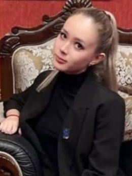

Авторы
Восточно-Казахстанский
технический университет им. Д. Серикбаева – один из ведущих технических ВУЗов
Казахстана, который готовит высококвалифицированных специалистов в таких
областях, как сельское хозяйство, металлургия, машиностроение, энергетика,
архитектура и строительство, транспорт, информационные системы,
экономика.
Тогузова Маржан Мельсовна
Сеильханова Алия Бакытовна

Айтуарова Карина Талгатовна